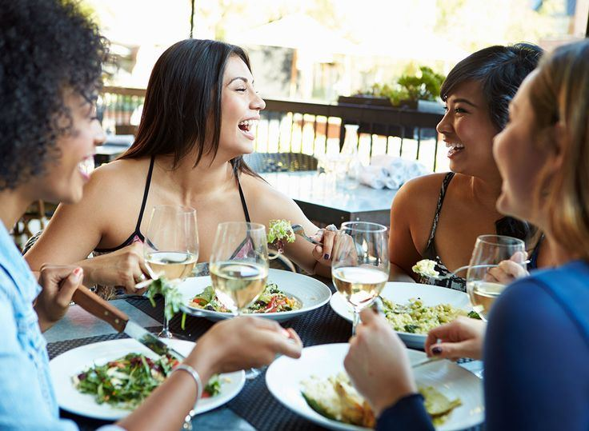
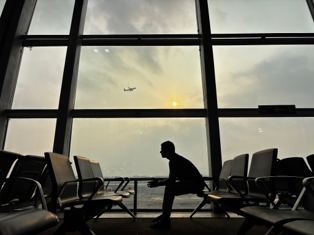
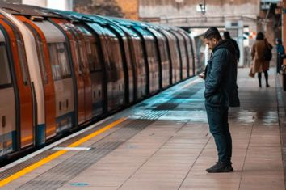
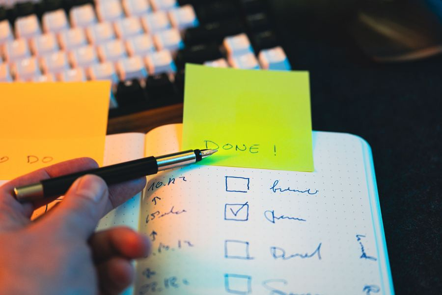

Aptis Speaking
Part 1: In this part, I am going to ask you three short questions about yourself and your interests. You will have 30 seconds to reply to each question.
1. Describe your room at home.
=> my room is small but very nice. I like it because here I can do many things. I love watching movies or listening to music in my room. It is quiet and warm. I also keep some photos of my family on the wall. They make me feel happy whenever I look at them.
2. What do you wear today?
=> Today I am wearing a T-shirt and a pair of jeans. I like this outfit because it is beautiful and comfortable. It makes me feel confident. I often wear this outfit when I go out. I chose this outfit because it is simple and easy to move in. My friends often say it suits me well.
3. When did you last go to the cinema?
=> Last week I went to the cinema with my friends. We watched a cartoon, Tom and Jerry. It was funny. We shared some popcorn and laughed a lot during the movie. It was a fun way to relax together.
Part 2: In this part, I'm going to ask you to describe a picture. Then I will ask you two questions about it. You will have 45 seconds for each response.
 |
1. Describe the picture => In this picture, I can see four women. They are eating at a
restaurant. They are wearing casual clothes and they look happy. On the
table, I can see |
2. Why do people like eating out with friends?
=> People like eating out with friends because it is fun and convenient. They can relax after a busy day and share happy moments with friends. Also, the food is delicious and they can save time for other things. We can also try new dishes and chat for hours without worrying about cooking. These moments always create good memories.
3. Please talk about the last time you ate with friends.
=> Last weekend, I ate with my friends in a restaurant near my house. It was big and beautiful. The food was tasty and healthy. The staff were helpful. I really liked it. We stayed there for almost two hours talking and laughing. I hope to go back there again soon.
Part 3: In this part, I'm going to ask you to compare two pictures, and I will then ask you two questions about them. You will have 45 seconds for each response.
1. Tell me what you can see in these two pictures.
 |
 |
=> The two pictures show people travelling in different ways.
In the first picture, I can see a man sitting at the airport. Maybe he is waiting for his flight. Outside the window I can see a plane. The weather is hot. The sun is shining brightly.
In the second picture I can see a man standing at the station. He is looking at his mobile phone. He is wearing warm clothes so I think the weather is cold. Both people seem to be traveling alone and waiting patiently. Travelling always brings a mix of excitement and tiredness.
2. Why do people prefer to go by plane rather than by train for long journeys?
=> Both planes and trains have different attractions to depending on peoples interests and budgets. Some people like travelling by train because it is affordable. However, some people prefer to go by plane because it is fast. It helps people save a lot of time. Also, it is safe and suitable for long journey. For long trips, saving time is very important to me. That is why I usually choose to fly instead of taking the train.
3. Why does flying make many people feel uncomfortable? Sitting still for many hours can also make people feel tired and stiff. Some also worry about turbulence during the flight.
=> Some people feel uncomfortable because they are afraid of flying. Others do not like sitting on a plane for a long time.
Part 4: In this part, I'm going to show you a picture and ask you three questions. You will have one minute to think about your answers before you start speaking. You will have two minutes to answer all three questions.

Tell me about a time when you successfully completed a task.
How did you feel after completing that task?
Why is it important to complete tasks successfully?
=> Regarding the first question, today I'm going to talk about a time when I successfully completed a task. Last month, I finished an important school project. I worked hard with my teammates and we finished it on time. We faced some problems along the way, but we solved them together. I felt very satisfied when we finished it.
Turning to the second question, I felt happy and proud of myself because I had tried my best. My teacher also praised our teamwork, which made me even happier.
About the last question, I think it is important to complete tasks successfully because it helps people achieve their goals. It also gives them more confidence for the future. It also helps build trust between teammates and colleagues.